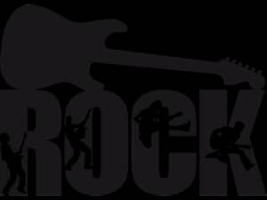
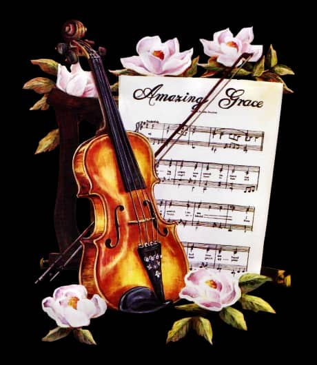

Rock

chat

e-mail
Mon parcours n'etait pas facile s'il y'avait possibilite de
l'explique ,je vous demanderais du temps car la vie ne nous a pas offert
cadeau vous ne me dire pas le contraire.
la vie est celle que l'on vu mais pas celle qu'on souhaite nous ne sommes
pour rien pour changer ce qu'il a promis au moins vivons avec amour chassant
bien que Dieu nous aime,je serai contant de voir un telle temoignage provenir
de vos bouches car je conclurai que Dieu ne vu pas que pour moi si non dans
le cas contraire serai navre de voir que les enfants cree d'un meme pere arrive
a donnez des differentes version de l'image inchangeable de leur si puissant
pere.
la music est le don de la paix